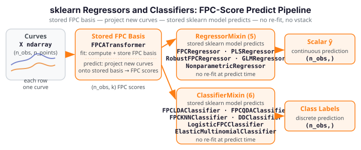

Regressors & Classifiers¶
Five RegressorMixin and six ClassifierMixin estimators wrap functional-data
prediction methods as standard sklearn predictors — accepting (n_obs, n_points)
curve matrices and predicting scalar targets or class labels via fit / predict.

All regressors and classifiers here follow the plain-ndarray contract: input X is
always (n_obs, n_points), y is (n_obs,). An argvals constructor parameter
(default None → uniform [0, 1] grid) sets the evaluation domain once at
construction, not at fit time, keeping the fit(X, y) signature clean.
See the coverage / EXCLUDE list for excluded functional regression
methods (concurrent_regression, fosr, non-Gaussian GLM, pace_fpca).
Regressors¶
| Estimator | sklearn mixin | fdars source | Key constructor params |
|---|---|---|---|
FPCRegressor |
RegressorMixin |
fdars._native.regression.fregre_lm / predict_fregre_lm |
n_components=10, argvals=None |
PLSRegressor |
RegressorMixin |
fdars._native.regression.fregre_pls / predict_fregre_pls |
n_components=3, argvals=None |
RobustFPCRegressor |
RegressorMixin |
fdars._native.regression.fregre_l1 / fregre_huber |
n_components=10, method="l1", huber_k=1.345, argvals=None |
GLMRegressor |
RegressorMixin |
fdars._native.regression.fpca + OLS |
n_components=10, max_iter=25, tol=1e-6, argvals=None |
NonparametricRegressor |
RegressorMixin |
fdars._native.regression.fregre_np |
bandwidth=0.0, argvals=None |
FPCRegressor¶
OLS regression on functional principal component scores. At fit time, FPC scores
are computed via fdars._native.regression.fpca and stored alongside the training
data; predict reconstructs scores for new curves via the stored FPC basis and
applies the stored OLS coefficients — no re-fit, no vstack, making predict
subset-invariant. Default n_components=10 ensures R² > 0.5 on the sklearn
battery's small datasets.
PLSRegressor¶
Partial-least-squares scalar regression on functional data. Stores training curves
and targets at fit; predict re-calls predict_fregre_pls on the stored data only
— subset-invariant by construction. Useful when n_points is large relative to
n_obs and FPC regression overfits.
RobustFPCRegressor¶
Robust FPC regression resistant to curve outliers. Supports method="l1" (L¹ loss)
and method="huber" (Huber M-estimation with huber_k scale parameter). Internally
uses the same stored-FPC-basis predict pattern as FPCRegressor.
GLMRegressor¶
Gaussian FPC-OLS regression — this is a Gaussian generalized linear model on FPC
scores, not a trapezoidal beta-function estimator. At fit, FPC scores are extracted
via fdars._native.regression.fpca and OLS coefficients are computed and stored as
coef_ / intercept_. predict applies the stored linear map to new FPC scores
derived from the stored basis — no re-fit, fully subset-invariant. A 1-feature guard
prevents degenerate single-column inputs.
Implementation note
GLMRegressor wraps the Gaussian family only. Binomial and Poisson GLM
variants are excluded from the sklearn layer (structural RESPONSE_DOMAIN
mismatch); use fdars.regression.functional_glm directly for those.
NonparametricRegressor¶
Nadaraya-Watson kernel regression: predicts a new observation's scalar target as a
kernel-weighted average of training targets, with weights proportional to the
functional L² distance from the new curve to each training curve. Bandwidth h_ is
set to the median pairwise L² distance at fit time when bandwidth=0.0.
Classifiers¶
| Estimator | sklearn mixin | fdars source | Key constructor params |
|---|---|---|---|
FPCLDAClassifier |
ClassifierMixin |
fdars._native.classification.fclassif_lda → sklearn LinearDiscriminantAnalysis |
ncomp=3, argvals=None |
FPCQDAClassifier |
ClassifierMixin |
fdars._native.classification.fclassif_qda → sklearn QuadraticDiscriminantAnalysis |
ncomp=3, argvals=None |
FPCKNNClassifier |
ClassifierMixin |
fdars._native.classification.fclassif_knn → numpy kNN on FPC scores |
ncomp=3, k=3, argvals=None |
DDClassifier |
ClassifierMixin |
fdars._native.classification.fclassif_dd → FPC-score centroid nearest-class |
argvals=None |
LogisticFPCClassifier |
ClassifierMixin |
fdars._native.regression.functional_logistic |
n_components=10, max_iter=25, tol=1e-6, argvals=None |
ElasticMultinomialClassifier |
ClassifierMixin |
fdars._native.classification.elastic_multinomial → sklearn LogisticRegression (OvR) |
ncomp_beta=5, lambda_penalty=0.1, max_iter=200, tol=1e-4, argvals=None |
FPC-Score Predict Pattern¶
Stored-FPC reconstruction
FPCLDAClassifier, FPCQDAClassifier, FPCKNNClassifier, DDClassifier, and
ElasticMultinomialClassifier all follow the same stored-FPC-score predict
pattern: at fit, FPC scores are computed from the training curves and a
sklearn model is fitted on those scores (LDA, QDA, kNN, centroid nearest-class,
or OvR logistic respectively). At predict, new curves are projected onto the
stored FPC basis to produce test scores, and the stored sklearn model predicts
from those — no re-fit, no vstack, fully subset-invariant.
The native fdars._native.classification.* functions are the source of the FPC
basis only; the final classification decision is a stored sklearn model, not a
re-invocation of the batch native method.
FPCLDAClassifier¶
Linear discriminant analysis on functional principal component scores. Stores the
FPC basis and a fitted sklearn.discriminant_analysis.LinearDiscriminantAnalysis
model. predict projects new curves to FPC scores, then delegates to the stored
LDA model.
FPCQDAClassifier¶
Quadratic discriminant analysis on FPC scores. Same stored-FPC pattern as
FPCLDAClassifier with QuadraticDiscriminantAnalysis. Requires at least two
training samples per class for class-covariance estimation.
FPCKNNClassifier¶
k-nearest-neighbour classification on FPC scores. Nearest-neighbour search is
performed with numpy L² distances against the stored training FPC scores. k=3
by default.
DDClassifier¶
Depth-vs-depth classifier implemented as nearest-class-centroid in FPC score space.
The native fclassif_dd method is batch-transductive (no stored per-class model);
this estimator reconstructs a compliant equivalent by computing per-class FPC-score
centroids at fit and assigning test points to the nearest centroid at predict.
Accepts no hyperparameters beyond argvals.
LogisticFPCClassifier¶
Binary logistic regression on functional data via fdars._native.regression.functional_logistic.
Binary-only (multi_class=False in __sklearn_tags__); the check_estimator battery
binarises multi-class data automatically. n_iter_ is set to max_iter (native does
not expose an iteration count).
ElasticMultinomialClassifier¶
K-class elastic multinomial classifier. Elastic FPCA scores (ncomp_beta components,
lambda_penalty regularisation) are extracted via the native method; a
sklearn.linear_model.LogisticRegression (OvR, default in sklearn 1.8+) is fitted
on those scores. Supports arbitrary number of classes. A 1-feature guard prevents
degenerate single-column inputs.
Typical Pipeline¶
from sklearn.pipeline import Pipeline
from fdars.sklearn._skeletons import BSplineSmoother, FPCATransformer, FPCLDAClassifier
pipe = Pipeline([
("smoother", BSplineSmoother()),
("fpca", FPCATransformer(n_components=4)),
("clf", FPCLDAClassifier()),
])
pipe.fit(X_train, y_train)
labels = pipe.predict(X_test)
For regression, replace the final stage: